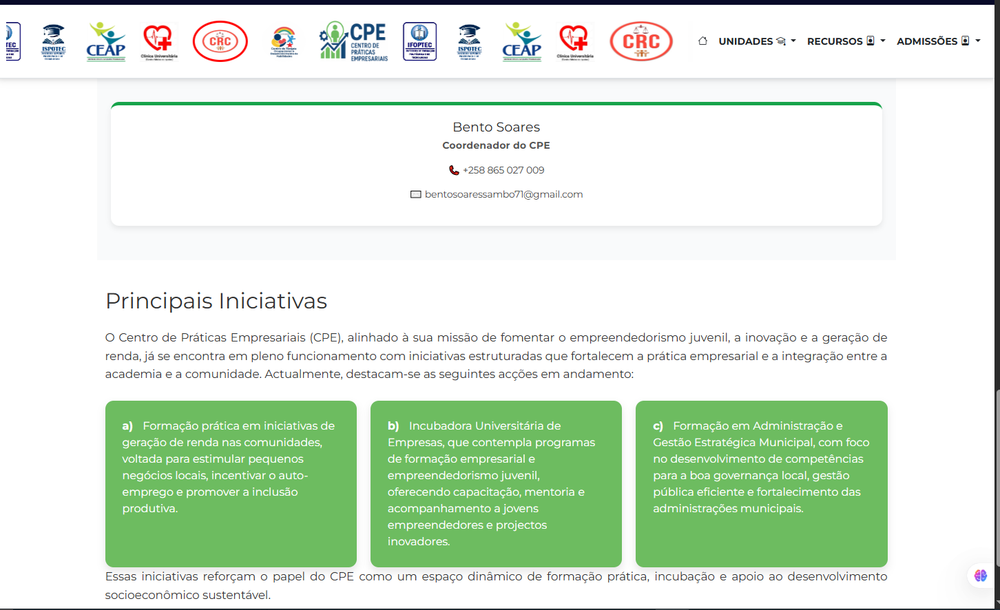

Plataforma Institucional IFOPTEC / ISPOTEC
Plataforma Web Institucional com Sistema de Admissões Online


Contexto e Desafio
As instituições IFOPTEC e ISPOTEC enfrentavam a ausência de uma presença digital institucional estruturada. O processo de admissão era pouco digitalizado, dificultando a gestão de inscrições e a comunicação com candidatos.
Solução Desenvolvida
Foi criada uma plataforma institucional web que centraliza a presença digital das instituições, apresenta programas académicos, serviços e centros institucionais, e integra um sistema de admissões online totalmente funcional.
O Meu Papel
Participei no desenvolvimento e manutenção da plataforma institucional do IFOPTEC/ISPOTEC, contribuindo para a implementação de novas funcionalidades, melhoria dos processos de admissão online e integração dos diferentes módulos da aplicação. O trabalho envolveu desenvolvimento backend em ASP.NET Core, implementação de interfaces web, modelação da base de dados e suporte à evolução contínua da plataforma.
Principais Contribuições
- Desenvolvimento de funcionalidades utilizando ASP.NET Core e Razor Pages.
- Implementação do sistema de admissões online.
- Modelação e manutenção da base de dados MySQL.
- Gestão de utilizadores e autenticação.
- Implementação de validações e formulários.
- Correção de erros e manutenção evolutiva.
- Produção de documentação técnica.
Desafios Técnicos
- Centralização de informações de diferentes unidades institucionais.
- Desenvolvimento de formulários de inscrição com múltiplas validações.
- Geração automática de documentos de inscrição.
- Integração entre módulos administrativos e académicos.
- Gestão de permissões de utilizadores.
Funcionalidades Principais
- Portal institucional completo das instituições
- Apresentação de programas académicos e centros institucionais
- Inscrição de candidatos online, com seleção de unidade e sucursal
- Geração automática de ficha de inscrição e recibo
- Indicação automática de dados bancários da instituição
- Relatórios detalhados de candidatos inscritos
- Gestão completa da informação académica dos candidatos
Estrutura Institucional Integrada
- Página institucional do IFOPTEC e do ISPOTEC
- Clínica Universitária
- Centro de Estudos Avançados
- Centro de Práticas Empresariais
- Centro de Acolhimento de Crianças com Necessidades Especiais
Unidades Integradas
- IFOPTEC 1 e 2
- ISPOTEC (Ensino Superior)
- Sucursais: Mozal e Maracuene